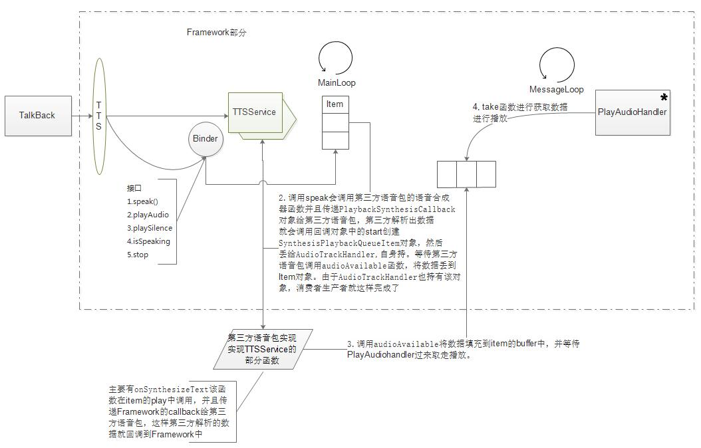

Android TTS学习
简述
TTS是Text To Speech的简称，就是将字符串转换成语音。Talkback是用来给帮助盲人朋友使用手机的apk，是android辅助功能的插件，安装完之后可以到辅助功能里面使能它，之后只要你触摸到android系统中的任何控件，都会将控件中的信息转变成语音的形式播放出来。
内容
TTS的语音是可以自由选择第三方或者是官方默认语音包，默认是pico，可以在源码external/svox这个文件夹找到对应的源码和语音包。我们去看源码的时候也会发现它必须继承并且实现android Framework中提供的TextToSpeechService，并且实现里面指定的一些抽象方法，这个是至关重要的。
最近工作遇到了一个跟TTS相关的bug，于是就有了这个总结。只是简单的对主要流程进行梳理，先看图，然后再结合下面的文字来理解吧。

先假设下场景：我们使能了Talkback，并且点击了settings的某个控件，这个时候控件会给AccessiblityService那边发送事件，然后AccessiblityService会给Talkback转发事件，Talkback接收到事件根据事件类型来决定最后的处理，假设这个时候有个文本信息需要转成语音信息，则会调用TextToSpeech的speak接口，我们从这边开始往下讲。
TextToSpeech这个类是Framework实现给第三方应用使用的，是图中椭圆形的TTS，它主要是封装了对TextToSpeechService的binder，这样第三方应用就无需再去获取该service，而可以直接使用TextToSpeech里面的方法跟service进行交互。
接着Talkback调用到TextToSpeech的speak的接口
- 在Service这边构件一个
SynthesisSpeechItemV1，然后将这个item投入到MainLoop中，而这个MainLoop的处理handler是SynthHandler，会从MainLoop中获取item，然后进行执行，即图中的第二点，每种类型的item几乎都实现了自己的playimpl方法，这样当SynthHandler调用到自己的时候就走到自己的流程了，对于SynthesisSpeechItemV1，它的源码流程是这样的：
1 | //1.创建一个PlaybackSynthesisCallback的回调实现 |
上面源码中想必你也注意到了mSynthesisRequest, 这个就是一开始构件SynthesisSpeechItemV1的时候创建的对象，里面封装了需要播放的文本，速度，语言，国家等一系列的信息。
- pico拿到数据和回调实例之后，就会开始准备自己的环境，当环境准备好之后它就会利用回调实例发送start的指令，该指令的实现主要是下面几个过程：
1 | //1.创建SynthesisPlaybackQueueItem |
非常简单，只是创建了另外一个item，然后将这个item丢给另外一个loop，让另外一个loop去处理播放事件。
需要注意的是SynthesisPlaybackQueueItem是属于回调实例的成员，而生产者和接收者的大部分实现则是在这里面。
- 之后pico如果有产生数据则会调用回调实例的
audioAvailable来将数据递给SynthesisPlaybackQueueItem，而mAudioTrackHandler如果正在处理该item的时候，并且发现有数据则会进行读取，并通过audiotrack进行播放（其实也只是单纯的调用了SynthesisPlaybackQueueItem中的run函数罢了）.
这样基本完成了播放的流程了。
到这边基本上完成了本文要讲的大部分内容了。不过还有一点需要注意一下的就是TextToSpeechService中函数onSynthesizeText是一个阻塞函数。会一直等待到pico返回的。
感觉这边的代码对于写音视频类的app应该是有借鉴作用的，这部分代码我只想说可以利用！！这边讲得很粗糙并且不够深入，代码里面有更多的实现细节，只能后面用到的时候再进一步归纳，总结了。。。